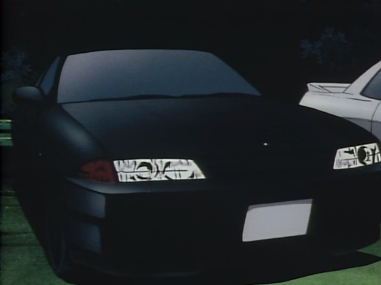

| Nissan Skyline R31 GTS (1987) | Nissan Skyline R32 GTS-T (1989) | Nissan Skyline R33 GT-R (1995) |
| Nissan Skyline R34 GT-R (1999) | Nissan Skyline V35 Coupe (2005) | Nissan Skyline V36 (2009) |

|
||
| Motorul RB26DETT dintr-un Skyline GT-R (R33) | Skyline GT-R (R32) modificat pentru Grupa A | Skyline GT-R (R34) în cadrul filmului "2 Fast 2 Furious" |
|  | ||
| Skyline GT-R (R32) prezent în desenul animat "Initial D" | Skyline 2000 GT (C10) prezent în desenul animat "Sailor Moon" | Skyline GT-R (R34) folosit la campionatele de drift de către Ken Nomura |